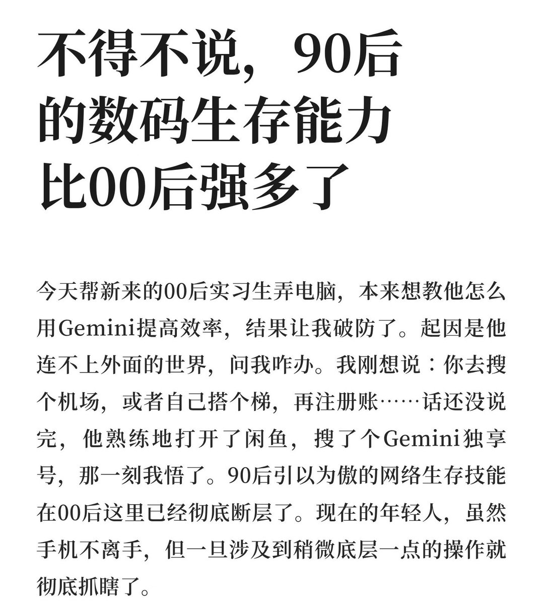

lovely水
@lovelyshuimao
统一说一下
Windows内核nt本来就是伺服器系统，其实是完全不适合家庭使用的
经历过2000年dos转向nt的人应该有所体会
在刚开始nt适配不行的情况下，干很多事情是必须要折腾的
真正的易用的系统是2007的iPhoneos和后续的ipados
没有文件管理？因为人家压根不用你管文件，你是电脑使用者，不是管家
统一应用市场，下个东西一键下载，不需要任何配置

lovely水
@lovelyshuimao
我是00后
我觉得电脑下东西非常麻烦，干任何事情都非常麻烦
平板甚至手机远比PC方便
特别是Windows https://t.co/vYCcxnnWsC